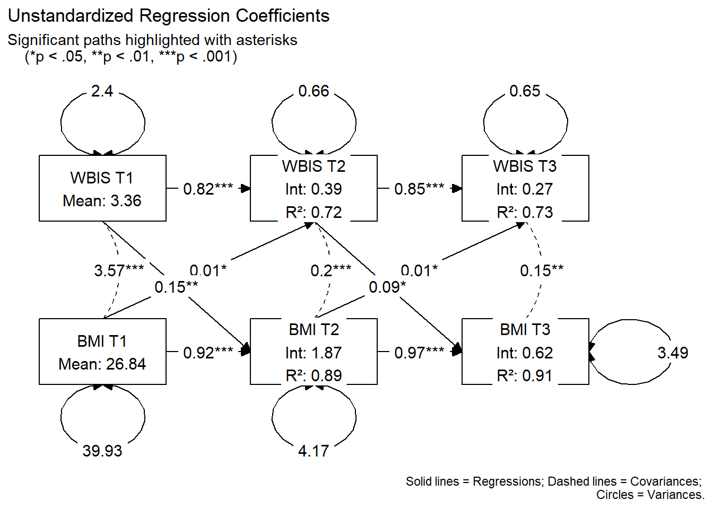

# Load necessary libraries
library(lavaan)
library(tidySEM)
library(ggplot2)
library(dplyr)The Cross-Lagged Panel Model: A starting point for understanding longitudinal SEM
Statistics
The cross-lagged panel model (CLPM) is a path analysis model that is typically estimated within the Structural Equation Modeling (SEM) framework for analyzing dynamic associations between variables measured at multiple time points.
The Cross-Lagged Panel Model
The Cross-Lagged Panel Model (CLPM) is a type of path analysis within the discrete-time structural equation modeling (SEM) framework used to analyze panel (longitudinal) data where the same variables are measured repeatedly across multiple time points (Kenny 1975). We will explore the traditional CLPM in this analysis, recognizing that while it has important limitations due to its relative simplicity (Hamaker 2015), it remains a useful starting point for understanding fundamental concepts in longitudinal modeling.
Basic concepts
Figure 1 shows a model with three time points (\(T1\), \(T2\), and \(T3\)), often called waves. The squares represent the observed variables, \(X\) and \(Y\), at each time point. Single-headed arrows indicate regression effects (directional effects), and double-headed arrows indicate correlations or (co)variances.

More specific, a CLPM typically includes:
The single-headed horizontal arrows (labeled \(a\) and \(b\)) represent autoregressive effects, also known as stability paths. Specifically, paths \(a_1\) and \(a_2\) indicate how well variable \(X\) at one time point predicts its own value at the next wave. Similarly, paths \(b_1\) and \(b_2\) indicate the longitudinal stability of variable \(Y\) over time. Notably, higher coefficients in these paths suggest that the variable is highly stable and doesn’t change much between waves.
The single-headed diagonal arrows represent the core of the model: the cross-lagged effects. Based on the specific configuration of this model, paths \(h_1\) and \(h_2\) show the influence of \(X\) on future changes in \(Y\). Conversely, paths \(g_1\) and \(g_2\) show the influence of \(Y\) on future changes in \(X\). These pathways make it possible to evaluate the “directional” influence between the two variables over time.
Within-time correlations: associations between variables at the same measurement occasion.
Direct paths and indirect effects
To further detail the mechanics of the cross-lagged panel model, the associations between waves can be mathematically expressed through direct paths and indirect effects (mediation paths). These equations illustrate how the variables at a later time point are a function of the variables from the preceding wave.
Direct path equations
\[X_{T2} = (intercept) + a_1\cdot X_{T1} + g_1 \cdot Y_{T1}\] \[Y_{T2} = (intercept) + b_1\cdot Y_{T1} + h_1 \cdot X_{T1}\]
\[X_{T3} = (intercept) + a_2\cdot X_{T2} + g_2 \cdot Y_{T2}\] \[Y_{T3} = (intercept) + b_2\cdot y_{T2} + h_2 \cdot X_{T2}\]
Indirect effects (Mediation Paths)
\[X_{T1} \Rightarrow X_{T2} \Rightarrow Y_{T3}: a_1 \cdot h_2\] \[X_{T1} \Rightarrow Y_{T2} \Rightarrow Y_{T3}: h_1 \cdot b_2\]
\[X_{T1} \Rightarrow Y_{T2} \Rightarrow X_{T3}: h_1 \cdot g_2\]
\[Y_{T1} \Rightarrow X_{T2} \Rightarrow X_{T3}: g_1 \cdot a_2\]
\[Y_{T1} \Rightarrow Y_{T2} \Rightarrow X_{T3}: b_1 \cdot g_2\]
\[Y_{T1} \Rightarrow X_{T2} \Rightarrow Y_{T3}: g_1 \cdot h_2\]
Additionally, the autoregressive indirect effects are:
\[X_{T1} \Rightarrow X_{T2} \Rightarrow X_{T3}: a_1 \cdot a_2\] \[Y_{T1} \Rightarrow Y_{T2} \Rightarrow Y_{T3}: b_1 \cdot b_2\]
CLPM with R
Data Preparation
Dataset
For this example, we examine the bidirectional association of weight bias internalization (WBIS) with BMI over time. Using a longitudinal design, data were collected from 925 participants across three distinct time points, or waves (\(T_1, T_2, \text{and } T_3\)) (Figure 2). WBIS is defined as the internalization of negative stereotypes and beliefs about one’s own body weight.

# load the dataset
library(readr)
dat <- read_csv("WBIS_BMI.csv")
dat# A tibble: 925 × 6
WBIS_T1 WBIS_T2 WBIS_T3 BMI_T1 BMI_T2 BMI_T3
<dbl> <dbl> <dbl> <dbl> <dbl> <dbl>
1 4.09 4.27 3.91 28.0 28.7 28.7
2 6 5.82 6.55 20.3 20.3 19.9
3 1.82 1.18 1 26.0 24.1 23.1
4 6.64 6 6.27 26.5 26.5 26.5
5 3.27 4.09 4.27 25.8 26.4 27.1
6 2.91 2.27 3.55 24.4 24.0 24.5
7 1.82 2.55 2.18 30.8 31.4 31.1
8 5.73 5.73 6.18 26.9 25.8 26.3
9 5.91 5.91 6.36 38.9 38.4 40.7
10 4.27 5 4.18 26.6 26.2 25.8
# ℹ 915 more rows
Cross-Lagged Panel Model
Model syntax
The following syntax defines a 3-Wave Cross-Lagged Panel Model (CLPM) to examine the longitudinal association between Weight Bias Internalization (WBIS) and BMI. The code organizes the analysis into three primary dynamics:
regressions (denoted by
~) represent both autoregressive paths, which measure the stability of a variable over time, and cross-lagged paths, which test if one variable predicts subsequent changes in the other.within-wave correlations (denoted by
~~) account for the shared variance between WBIS and BMI at each time point.indirect effects (using
:=operator) to estimate longitudinal mediation pathways by calculating whether an initial measurement at Time 1 influences an outcome at Time 3 through a mediation effect at Time 2.
# --- Define the Model ---
my_model <- '
# Regressions (Direct Paths)
WBIS_T2 ~ a1*WBIS_T1 + g1*BMI_T1
BMI_T2 ~ b1*BMI_T1 + h1*WBIS_T1
WBIS_T3 ~ a2*WBIS_T2 + g2*BMI_T2
BMI_T3 ~ b2*BMI_T2 + h2*WBIS_T2
# Covariances (Within-Wave Associations)
WBIS_T1 ~~ BMI_T1
WBIS_T2 ~~ BMI_T2
WBIS_T3 ~~ BMI_T3
# Indirect Effects
wb1_wb2_bm3 := a1 * h2
wb1_bm2_bm3 := h1 * b2
wb1_bm2_wb3 := h1 * g2
bm1_wb2_wb3 := g1 * a2
bm1_bm2_wb3 := b1 * g2
bm1_wb2_bm3 := g1 * h2
wb1_wb2_wb3 := a1 * a2
bm1_bm2_bm3 := b1 * b2
'
sem() function
The sem() function from the lavaan package is used to fit the model to the dataset by estimating the associations defined in the model syntax. Within this function, fixed.x = FALSE ensures that the Time 1 variables are treated as observed rather than fixed, which is necessary for estimating baseline correlations, and meanstructure = TRUE includes intercepts in the estimation to account for the average levels of \(WBIS\) and \(BMI\) across waves.
# --- Fit the Model ---
fit <- sem(my_model, data = dat, fixed.x = FALSE, meanstructure = TRUE)
Once the model is fitted, the summary() function is used to evaluate the results. By including the standardized = TRUE argument, the output displays a Std.all column containing the standardized coefficients (Beta weights), which are essential for comparing the relative strength of the paths between WBIS and BMI. Additionally, fit.measures = TRUE generates the necessary indices (such as CFI, TLI, and RMSEA) required to report the model’s overall “goodness-of-fit”.
# --- View Results ---
summary(fit, standardized = TRUE, fit.measures = TRUE, rsquare = TRUE)lavaan 0.6-20 ended normally after 38 iterations
Estimator ML
Optimization method NLMINB
Number of model parameters 23
Number of observations 925
Model Test User Model:
Test statistic 108.605
Degrees of freedom 4
P-value (Chi-square) 0.000
Model Test Baseline Model:
Test statistic 6985.667
Degrees of freedom 15
P-value 0.000
User Model versus Baseline Model:
Comparative Fit Index (CFI) 0.985
Tucker-Lewis Index (TLI) 0.944
Loglikelihood and Information Criteria:
Loglikelihood user model (H0) -10753.771
Loglikelihood unrestricted model (H1) -10699.468
Akaike (AIC) 21553.541
Bayesian (BIC) 21664.626
Sample-size adjusted Bayesian (SABIC) 21591.581
Root Mean Square Error of Approximation:
RMSEA 0.168
90 Percent confidence interval - lower 0.142
90 Percent confidence interval - upper 0.196
P-value H_0: RMSEA <= 0.050 0.000
P-value H_0: RMSEA >= 0.080 1.000
Standardized Root Mean Square Residual:
SRMR 0.016
Parameter Estimates:
Standard errors Standard
Information Expected
Information saturated (h1) model Structured
Regressions:
Estimate Std.Err z-value P(>|z|) Std.lv Std.all
WBIS_T2 ~
WBIS_T1 (a1) 0.820 0.018 44.356 0.000 0.820 0.830
BMI_T1 (g1) 0.011 0.005 2.477 0.013 0.011 0.046
BMI_T2 ~
BMI_T1 (b1) 0.920 0.011 80.578 0.000 0.920 0.931
WBIS_T1 (h1) 0.146 0.047 3.142 0.002 0.146 0.036
WBIS_T3 ~
WBIS_T2 (a2) 0.846 0.019 45.219 0.000 0.846 0.837
BMI_T2 (g2) 0.010 0.005 2.217 0.027 0.010 0.041
BMI_T3 ~
BMI_T2 (b2) 0.971 0.011 91.473 0.000 0.971 0.948
WBIS_T2 (h2) 0.094 0.043 2.180 0.029 0.094 0.023
Covariances:
Estimate Std.Err z-value P(>|z|) Std.lv Std.all
WBIS_T1 ~~
BMI_T1 3.568 0.343 10.417 0.000 3.568 0.365
.WBIS_T2 ~~
.BMI_T2 0.197 0.055 3.586 0.000 0.197 0.119
.WBIS_T3 ~~
.BMI_T3 0.148 0.050 2.975 0.003 0.148 0.098
Intercepts:
Estimate Std.Err z-value P(>|z|) Std.lv Std.all
.WBIS_T2 0.388 0.118 3.301 0.001 0.388 0.254
.BMI_T2 1.867 0.296 6.296 0.000 1.867 0.299
.WBIS_T3 0.268 0.119 2.251 0.024 0.268 0.174
.BMI_T3 0.615 0.276 2.228 0.026 0.615 0.096
WBIS_T1 3.356 0.051 65.897 0.000 3.356 2.167
BMI_T1 26.836 0.208 129.164 0.000 26.836 4.247
Variances:
Estimate Std.Err z-value P(>|z|) Std.lv Std.all
.WBIS_T2 0.657 0.031 21.506 0.000 0.657 0.281
.BMI_T2 4.175 0.194 21.506 0.000 4.175 0.107
.WBIS_T3 0.650 0.030 21.506 0.000 0.650 0.272
.BMI_T3 3.491 0.162 21.506 0.000 3.491 0.085
WBIS_T1 2.399 0.112 21.506 0.000 2.399 1.000
BMI_T1 39.930 1.857 21.506 0.000 39.930 1.000
R-Square:
Estimate
WBIS_T2 0.719
BMI_T2 0.893
WBIS_T3 0.728
BMI_T3 0.915
Defined Parameters:
Estimate Std.Err z-value P(>|z|) Std.lv Std.all
wb1_wb2_bm3 0.077 0.036 2.177 0.029 0.077 0.019
wb1_bm2_bm3 0.142 0.045 3.140 0.002 0.142 0.034
wb1_bm2_wb3 0.001 0.001 1.811 0.070 0.001 0.001
bm1_wb2_wb3 0.009 0.004 2.473 0.013 0.009 0.039
bm1_bm2_wb3 0.009 0.004 2.216 0.027 0.009 0.038
bm1_wb2_bm3 0.001 0.001 1.636 0.102 0.001 0.001
wb1_wb2_wb3 0.693 0.022 31.665 0.000 0.693 0.695
bm1_bm2_bm3 0.894 0.015 60.464 0.000 0.894 0.882
Understanding the output from lavaan
While the lavaan output is notoriously comprehensive and can be overwhelming at first glance, it is structured logically to provide a complete view of our model’s performance. It is helpful to view the output in three distinct stages:
The global model fit
fitMeasures(fit, c("cfi", "tli", "rmsea", "srmr")) cfi tli rmsea srmr
0.985 0.944 0.168 0.016 According to Hu and Bentler (1999), an acceptable fit is achieved when CFI \(\ge\) 0.95 and SRMR \(\le\) 0.08—a guideline known as the combination rule. This recommendation, however, remains a topic of debate, as these cut-offs can be overly restrictive for complex models or those with smaller sample sizes.
Direct path equations
Using the parameterEstimates() function allows us to extract the direct path parameters of the model.
# Pull the estimates
estimates <- parameterEstimates(fit)
The intercepts
The following code extracts the intercept for each equation:
# intercepts
subset(estimates, op == "~1")[, c("lhs", "est")] lhs est
18 WBIS_T2 0.388
19 BMI_T2 1.867
20 WBIS_T3 0.268
21 BMI_T3 0.615
22 WBIS_T1 3.356
23 BMI_T1 26.836
The regression coefficients
We obtain the regression coefficients (the \(B\) weights) from the unstandardized est column:
# regressions
subset(estimates, op == "~") lhs op rhs label est se z pvalue ci.lower ci.upper
1 WBIS_T2 ~ WBIS_T1 a1 0.820 0.018 44.356 0.000 0.783 0.856
2 WBIS_T2 ~ BMI_T1 g1 0.011 0.005 2.477 0.013 0.002 0.020
3 BMI_T2 ~ BMI_T1 b1 0.920 0.011 80.578 0.000 0.898 0.942
4 BMI_T2 ~ WBIS_T1 h1 0.146 0.047 3.142 0.002 0.055 0.238
5 WBIS_T3 ~ WBIS_T2 a2 0.846 0.019 45.219 0.000 0.809 0.883
6 WBIS_T3 ~ BMI_T2 g2 0.010 0.005 2.217 0.027 0.001 0.019
7 BMI_T3 ~ BMI_T2 b2 0.971 0.011 91.473 0.000 0.951 0.992
8 BMI_T3 ~ WBIS_T2 h2 0.094 0.043 2.180 0.029 0.010 0.179
Regression equations
Based on the unstandardized parameter estimates, the longitudinal dynamics between Weight Bias Internalization (WBIS) and Body Mass Index (BMI) are defined by the following regression equations.
Wave 2 Predictions:
\[WBIS\_T2 = 0.388 + 0.820 \cdot WBIS\_{T1} + 0.011 \cdot BMI\_{T1}\]
\[BMI\_{T2} = 1.867 + 0.920 \cdot BMI\_{T1} + 0.146 \cdot WBIS\_{T1}\]
Wave 3 Predictions:
\[WBIS\_{T3} = 0.268 + 0.846 \cdot WBIS\_{T2} + 0.010 \cdot BMI\_{T2}\]
\[BMI\_{T3} = 0.615 + 0.971 \cdot BMI\_{T2} + 0.094 \cdot WBIS\_{T2}\]
Now, let’s interpret the BMI Wave 3 Prediction:
\[BMI\_{T3} = 0.615 + 0.971 \cdot BMI\_{T2} + 0.094 \cdot WBIS\_{T2}\]
The intercept is the constant or the “starting value” for \(BMI_{T3}\) when all other predictors in the equation are zero. It is the base level for BMI at Wave 3.
Stability (\(b_2 = 0.971\)): For every 1-unit increase in BMI at Wave 2, BMI at Wave 3 is predicted to increase by 0.971 units, adjusting for Weight Bias Internalization at wave 2.
Cross-lag (\(h_2 = 0.094\)): This is the most important coefficient for testing our theoretical model, as it represents the effect of one variable on a different variable over time. For every 1-unit increase in the Weight Bias Internalization Scale (WBIS) at Wave 2, BMI at Wave 3 is predicted to increase by 0.094 units, adjusting the previous BMI.
Indirect effects
# Pull only the indirect effects you defined at the bottom of your syntax
subset(estimates, op == ":=") lhs op rhs label est se z pvalue ci.lower ci.upper
24 wb1_wb2_bm3 := a1*h2 wb1_wb2_bm3 0.077 0.036 2.177 0.029 0.008 0.147
25 wb1_bm2_bm3 := h1*b2 wb1_bm2_bm3 0.142 0.045 3.140 0.002 0.053 0.231
26 wb1_bm2_wb3 := h1*g2 wb1_bm2_wb3 0.001 0.001 1.811 0.070 0.000 0.003
27 bm1_wb2_wb3 := g1*a2 bm1_wb2_wb3 0.009 0.004 2.473 0.013 0.002 0.017
28 bm1_bm2_wb3 := b1*g2 bm1_bm2_wb3 0.009 0.004 2.216 0.027 0.001 0.018
29 bm1_wb2_bm3 := g1*h2 bm1_wb2_bm3 0.001 0.001 1.636 0.102 0.000 0.002
30 wb1_wb2_wb3 := a1*a2 wb1_wb2_wb3 0.693 0.022 31.665 0.000 0.650 0.736
31 bm1_bm2_bm3 := b1*b2 bm1_bm2_bm3 0.894 0.015 60.464 0.000 0.865 0.923All four indirect effects are statistically significant (p<0.05).
Path diagram
In Structural Equation Modeling (SEM) frmamwork and path analysis, a graph—often called a path diagram—is not just an illustration; it is a mathematical map of the theory. Using the tidySEM and lavaan package in R allows us to translate these mathematical theories into informative visualizations. We will visualize both unstandardized and standardized coefficients.
Graph with Unstandardized Coefficients
# --- Visualization with tidySEM: Unstandardized estimates ---
# Define the spatial layout
lay <- get_layout(
"WBIS_T1", "WBIS_T2", "WBIS_T3",
"BMI_T1", "BMI_T2", "BMI_T3",
rows = 2
)
# --- PREPARE GRAPH DATA ---
res <- table_results(fit, standardized = FALSE)
graph_data <- prepare_graph(fit, layout = lay, results = res)
# --- GET RAW P-VALUES FROM SEM() ---
# Align lavaan terminology (lhs/rhs) with tidySEM terminology (from/to)
raw_pvals <- parameterEstimates(fit) %>%
filter(op == "~" | op == "~~") %>%
mutate(from = ifelse(op == "~", rhs, lhs),
to = ifelse(op == "~", lhs, rhs)) %>%
select(from, to, op, p_raw = pvalue)
# --- FORMAT EDGES ---
graph_data$edges <- graph_data$edges %>%
left_join(raw_pvals, by = c("from", "to", "op")) %>%
mutate(
# Recalculate stars based on precise p_raw
new_stars = case_when(
from == to ~ "", # No stars for variances
is.na(p_raw) ~ "", # Fallback for paths not found
p_raw < 0.001 ~ "***",
p_raw < 0.01 ~ "**",
p_raw < 0.05 ~ "*", # 0.013 correctly hits here
TRUE ~ ""
),
# Check significance for styling
is_sig = !is.na(p_raw) & p_raw < 0.05,
is_cov = !is.na(curvature) & curvature != 0,
is_variance = from == to,
# LABEL: Use Rounded Est + Correct Stars for paths; only Est for variances
label = ifelse(is_variance,
round(as.numeric(est), 2),
paste0(round(as.numeric(est), 3), new_stars)),
# STYLE: Colors based on precise p-value
color = ifelse(is_sig | is_variance, "black", "grey75"),
linewidth = 0.5,
linetype = ifelse(is_cov, 2, 1)
)
# --- NODE LABELING LOGIC (Unchanged) ---
intercept_table <- parameterEstimates(fit) |> filter(op == "~1")
int_lookup <- setNames(intercept_table$est, intercept_table$lhs)
r2_values <- inspect(fit, "rsquare")
graph_data$nodes <- graph_data$nodes |>
mutate(
node_width = 1.8, node_height = 1.2,
label = sapply(name, function(x) {
val_est <- if(x %in% names(int_lookup)) round(int_lookup[x], 2) else NA
if (is.na(val_est)) return(gsub("_", " ", x))
if (grepl("T1", x)) {
paste0(gsub("_", " ", x), "\nMean: ", val_est)
} else {
val_r2 <- if(x %in% names(r2_values)) round(r2_values[x], 2) else 0
paste0(gsub("_", " ", x), "\nInt: ", val_est, "\nR²: ", val_r2)
}
})
)
# --- FINAL PLOT ---
plot(graph_data) +
labs(
title = "Unstandardized Regression Coefficients",
subtitle = "Significant paths highlighted with asterisks
(*p < .05, **p < .01, ***p < .001)",
caption = "Solid lines = Regressions; Dashed lines = Covariances;
Circles = Variances."
)
Graph with Standardized Coefficients
# Prepare the graph data
graph_data_std <- prepare_graph(fit, layout = lay, standardized = TRUE)
# Get high-precision p-values from lavaan
# IMPORTANT: In lavaan Y ~ X, lhs is Y (to) and rhs is X (from).
raw_pvals <- parameterEstimates(fit) |>
filter(op == "~" | op == "~~") |>
mutate(from = ifelse(op == "~", rhs, lhs),
to = ifelse(op == "~", lhs, rhs)) |>
select(from, to, p_raw = pvalue)
# Merge and create the label
graph_data_std$edges <- graph_data_std$edges |>
left_join(raw_pvals, by = c("from", "to")) |>
mutate(
# Create the stars based on the high-precision p_raw
new_stars = case_when(
from == to ~ "", # No stars for variances
is.na(p_raw) ~ "", # Handle missing p-values
p_raw < 0.001 ~ "***",
p_raw < 0.01 ~ "**",
p_raw < 0.05 ~ "*", # 0.013 will correctly get one *
TRUE ~ ""
),
# Overwrite the label with rounded estimate + our precise stars
label = paste0(round(as.numeric(est_std), 2), new_stars)
)
# Standard Node Formatting
graph_data_std$nodes <- graph_data_std$nodes |>
mutate(
node_width = 1.5, node_height = 1.0,
label = sapply(name, function(x) {
clean_name <- gsub("_", " ", x)
if (grepl("T1", x)) return(clean_name)
val_r2 <- if(x %in% names(r2_values)) round(r2_values[x], 2) else 0
paste0(clean_name, "\nR²: ", val_r2)
})
)
# Plot
plot(graph_data_std) +
labs(
title = "Standardized Regression Coefficients",
subtitle = "Significant paths highlighted with asterisks
(*p < .05, **p < .01, ***p < .001)",
caption = "Solid lines = Regressions; Dashed lines = Covariances;
Circles = Variances."
)
References
Hamaker, Kuiper, E. L. 2015. “A Critique of the Cross-Lagged Panel Model.” Psychological Methods 20 (1): 102–16. https://doi.org/10.1037/a0038889.
Hu, Li-tze, and Peter M Bentler. 1999. “Cutoff Criteria for Fit Indexes in Covariance Structure Analysis: Conventional Criteria Versus New Alternatives.” Structural Equation Modeling: A Multidisciplinary Journal 6 (1): 1–55. https://doi.org/10.1080/10705519909540118.
Kenny, D. A. 1975. “Cross-Lagged Panel Correlation: A Test for Spuriousness.” Psychological Bulletin 5: 887–903. https://doi.org/10.1037/0033-2909.82.6.887.